Everyday, 2020
NU galleri
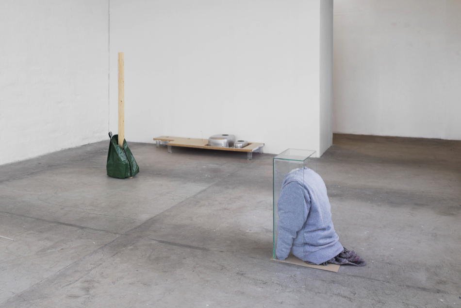
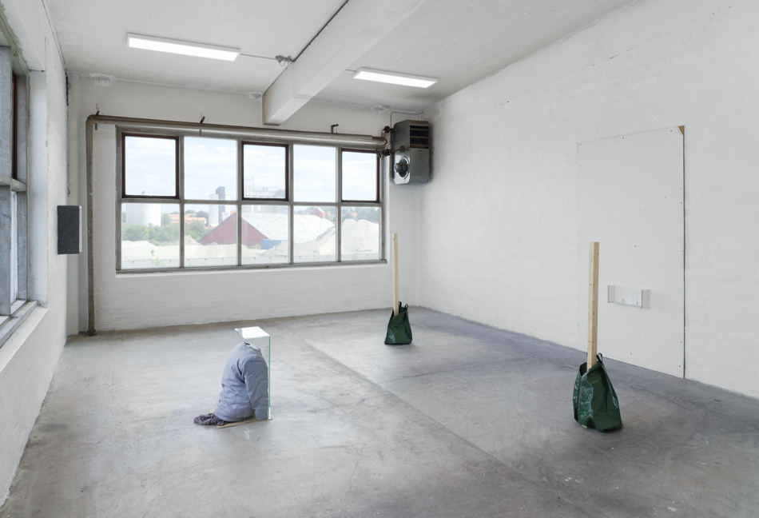
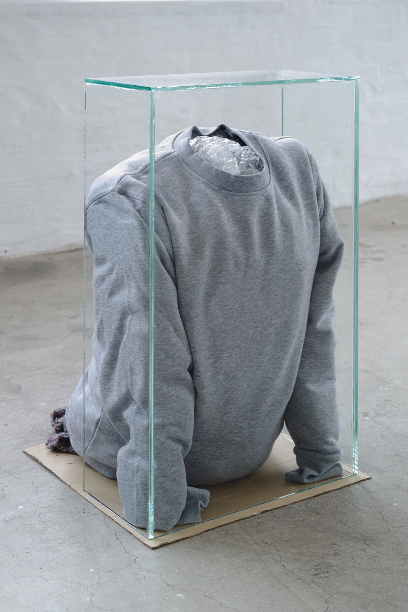
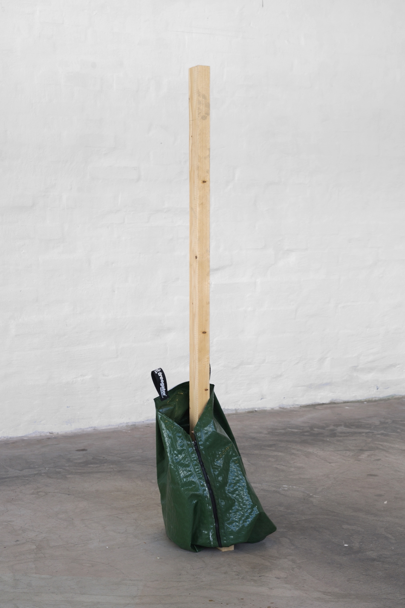
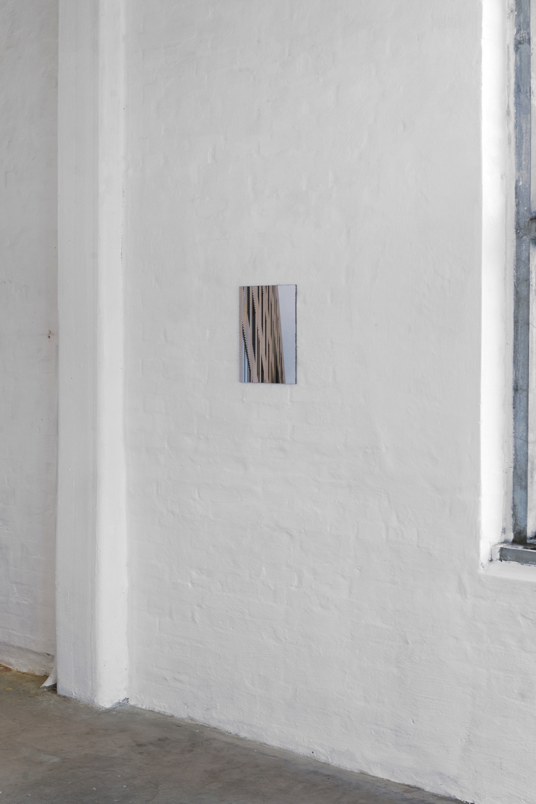
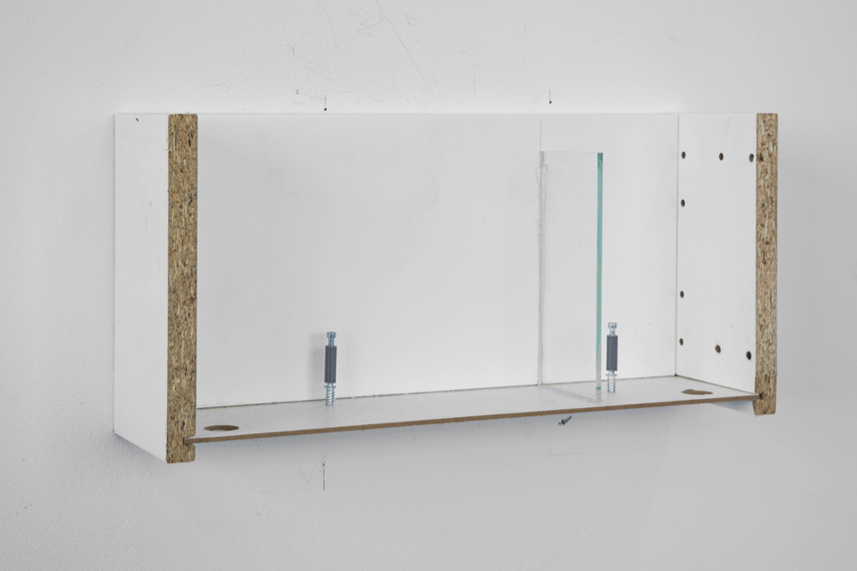
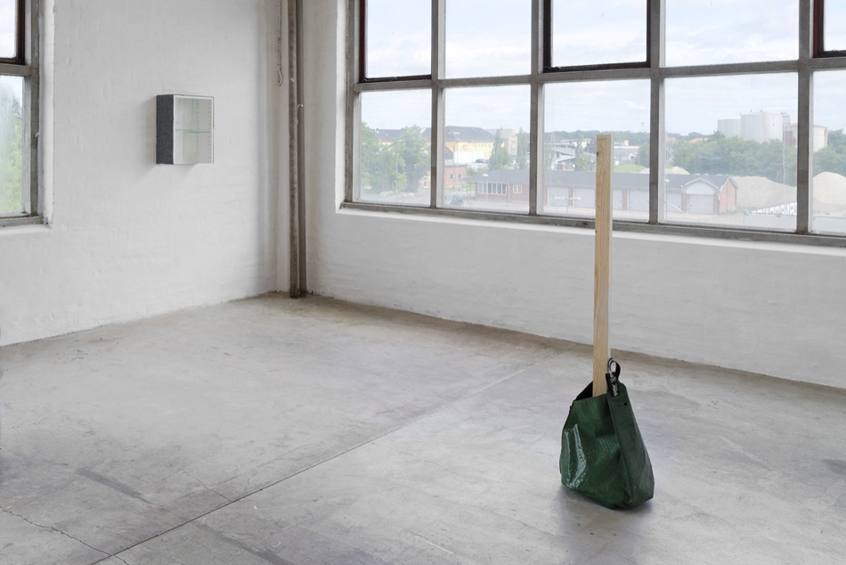
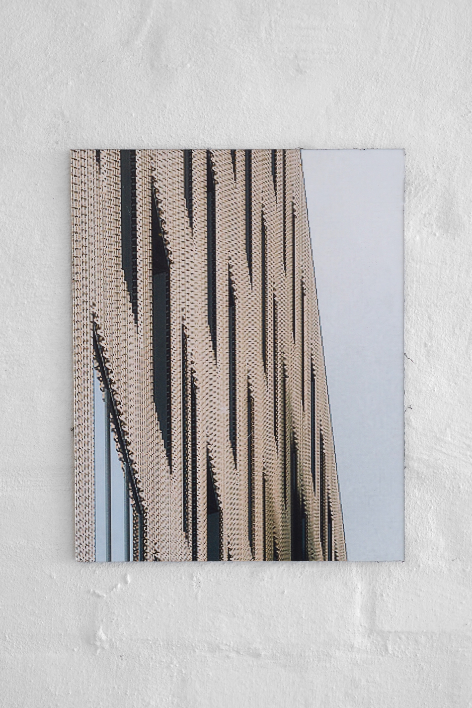
Fotos: Brian Kure
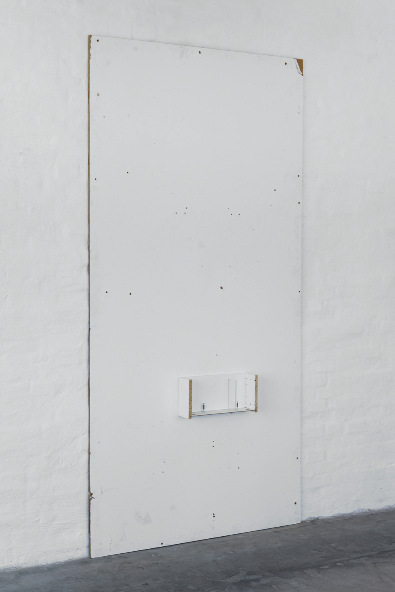
Tilskåret udsnit af arkitektonisk computerrendering fra byggeplads, print på dibondplade
Tilskåret udsnit af arkitektonisk computerrendering fra byggeplads, print på dibondplade
45x95 mm skillerumslægte, 75 liter pvc vandingspose
Silikone, bomuldstrøje, flyttetæppe, bobleplast, 6 mm glas
122x244 cm mdf-plade, melaminspånplader, skruer, 4 mm glas, silikone
Melaminspånplader, rustfrit stål, 4 mm glas, polypropylen gulvtæppe, silikone
Detalje, 122x244 cm mdf-plade, melaminspånplader, skruer, 4 mm glas, silikone
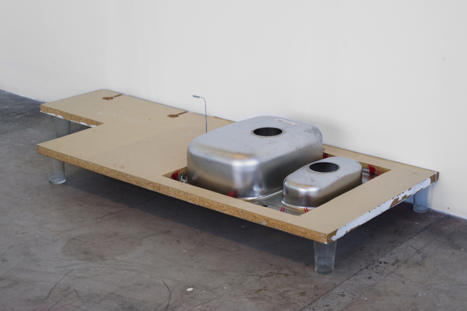
Lamineret melamin spånbordplade, stålhåndvask, glas, gadelampe, vandglas
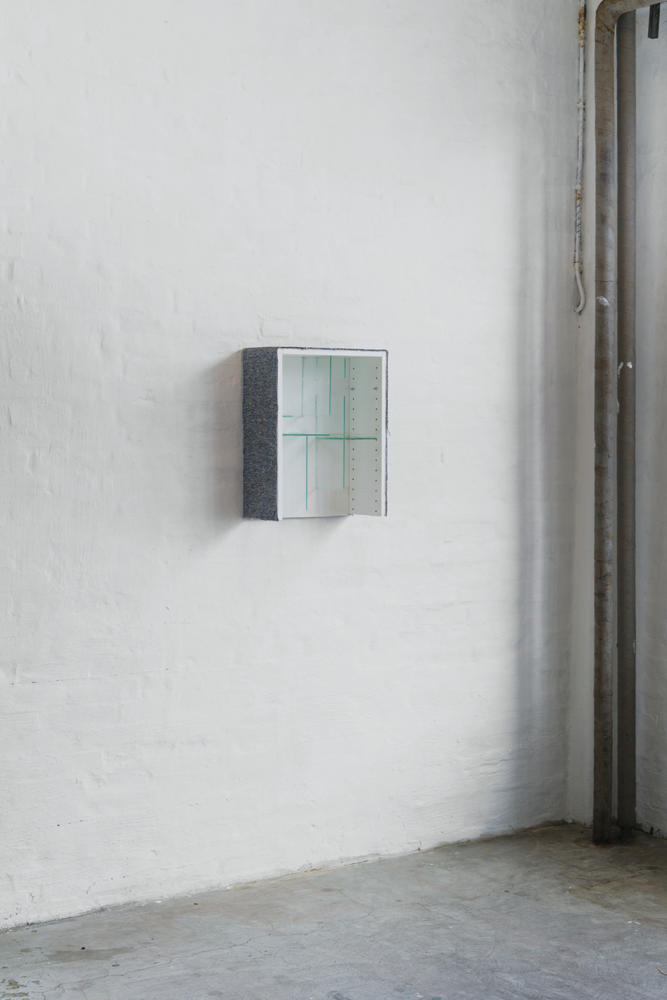
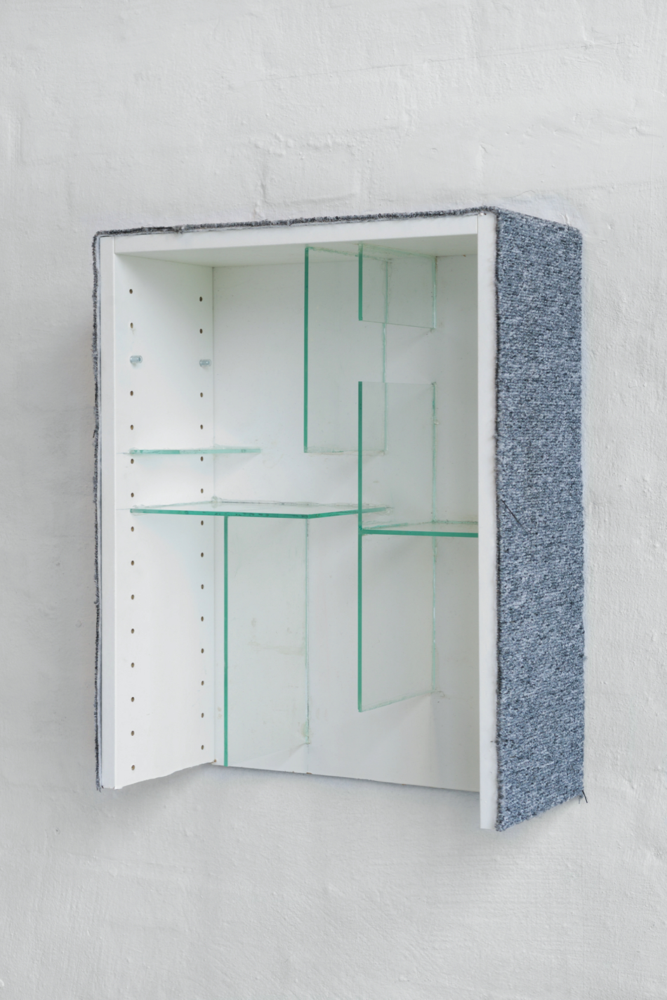
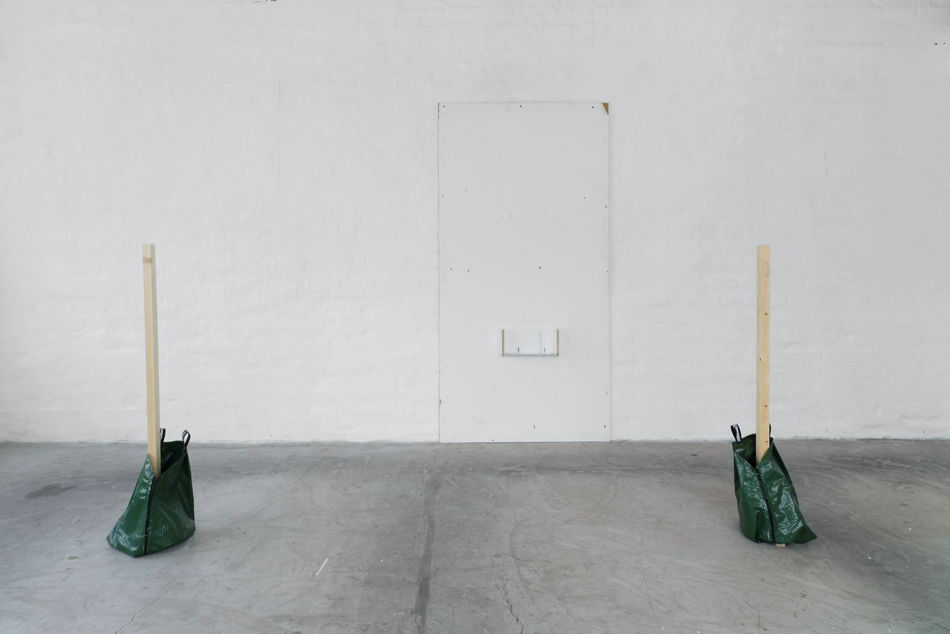